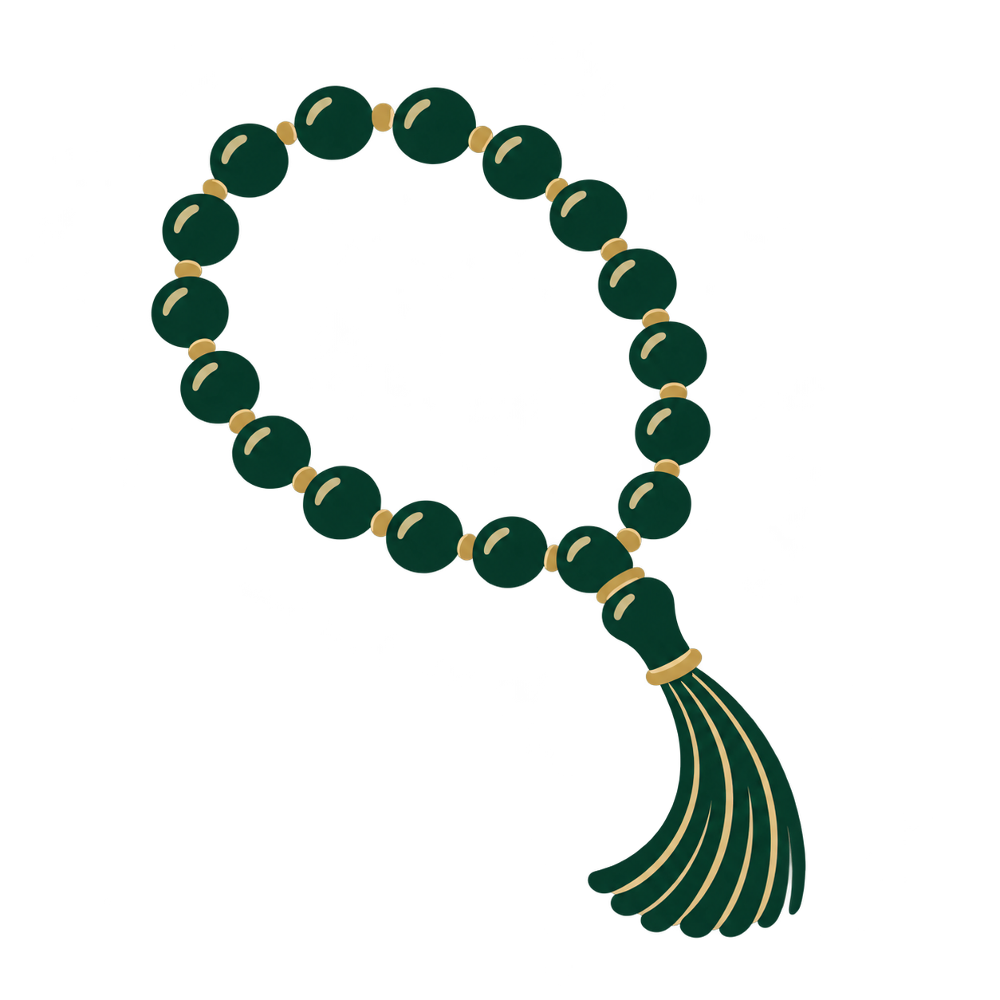
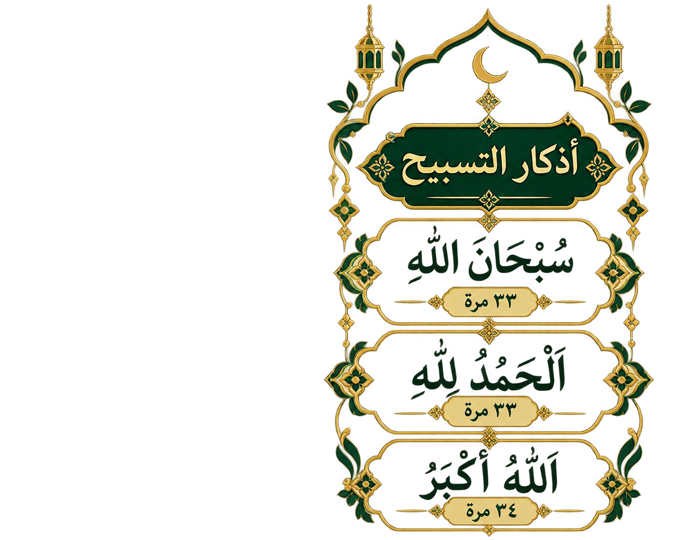

السبحة
خش سبح الله
المصحف
اقرأ كتاب الله
مواقيت الصلاة
اعرف توقيت صلاتك
تطبيق ديني

خش سبح الله
اقرأ كتاب الله
اعرف توقيت صلاتك

0
اختر السورة التي تريد قراءتها
جاري تحميل التاريخ...
دمياط، مصر
جاري تحميل المواقيت...